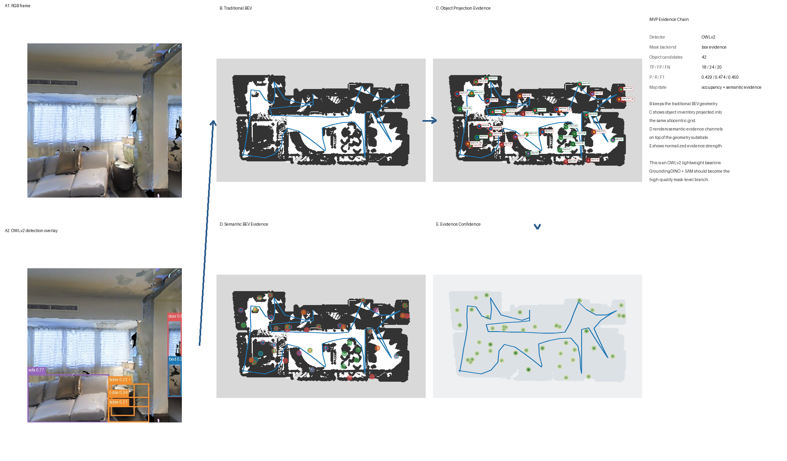
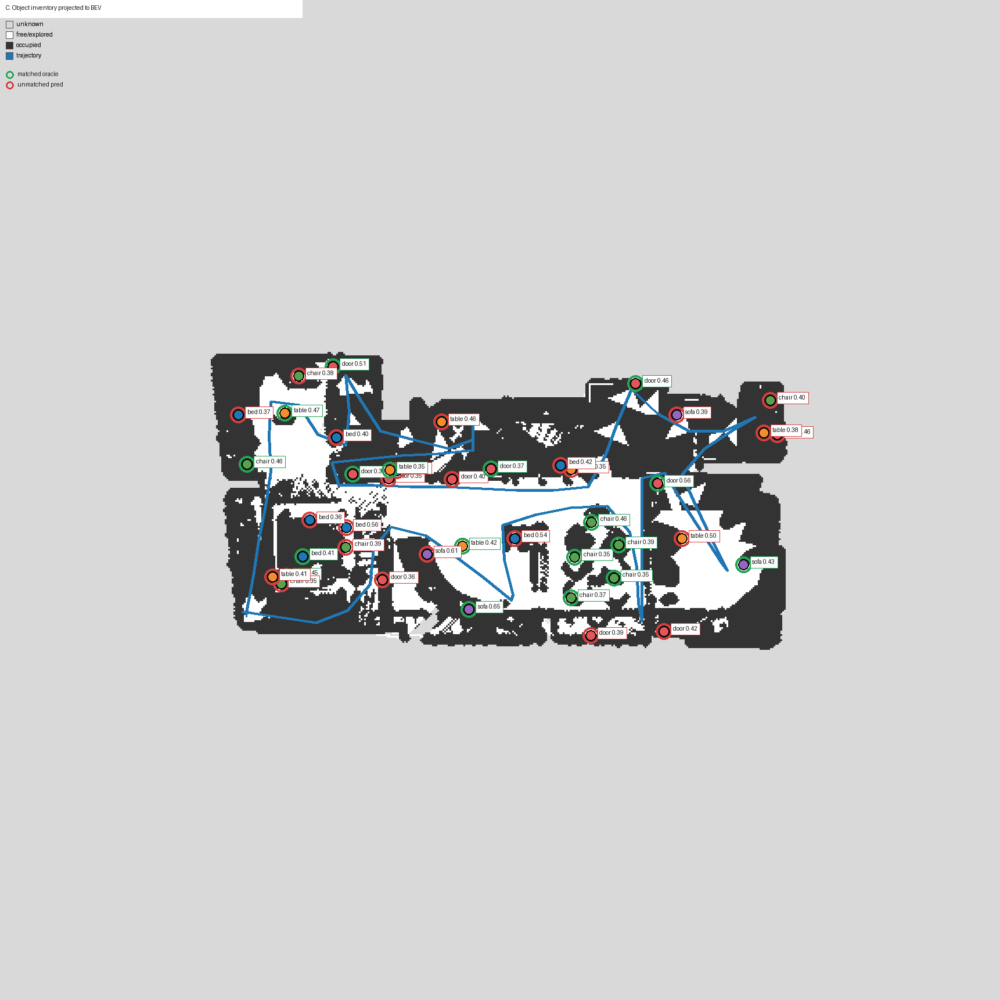
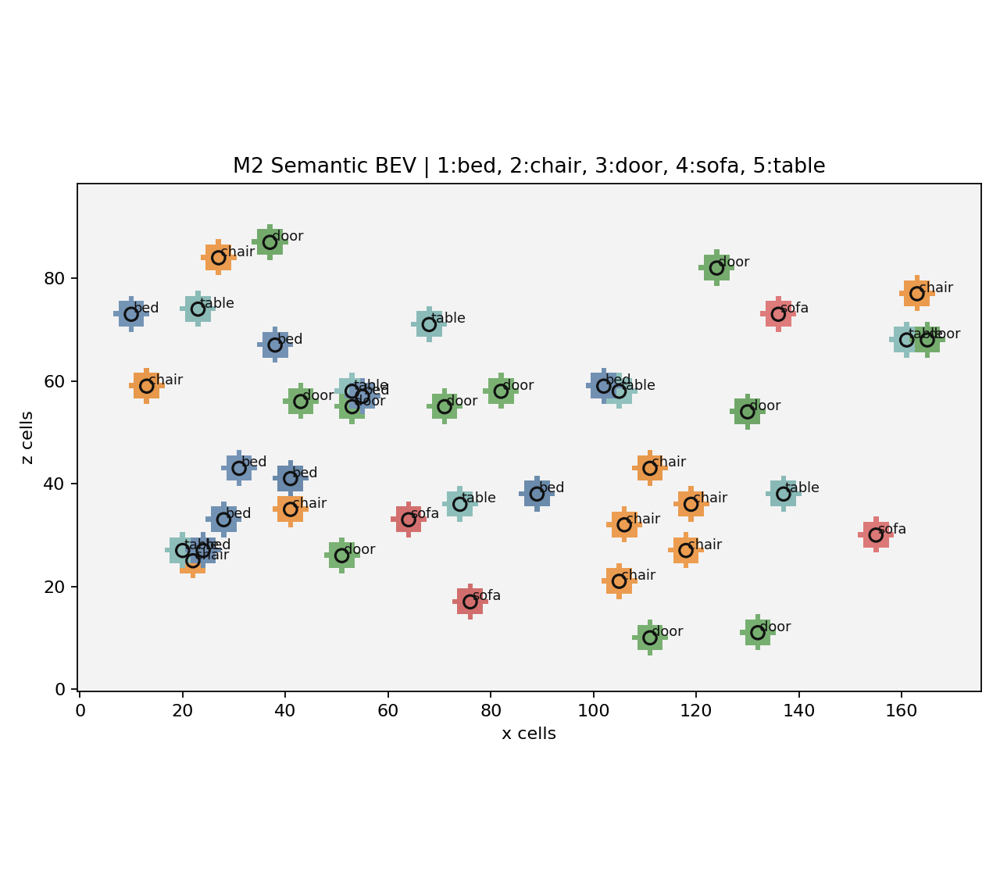

{kind=link}
{kind=link}
{kind=link}
Latest Case
Familiarize online → Find and report all cups
30s goal-centric GIF | Task result | Caption audit metadata
{kind=link}
论文风格 semantic BEV / object projection / pipeline 图汇总。
打开 M3.5 paper indexLingBot-Map、Depth 与 Vision 在固定 Habitat 输入上的几何、深度修复和边界代理任务对比。
打开 LingBot benchmark20 个语义导航 query，隐藏 goal-matching waypoint id 后的 API planner 汇总。
打开 20-case reportbed/chair/door/sofa/table 五类目标 waypoint 的 Habitat navmesh snap/reachability 验证。
打开 navmesh report


A 30.0-second goal-centric replay of an 878-step live Habitat episode. Navigation is compressed to approximately 25x while task injection, verification, search-belief updates, and replanning are held for readable trace-grounded captions. The task starts at step 347. One support belief rises from 0.75 to 0.94 after positive evidence, another falls from 0.70 to 0.21 after an observable negative sweep, and a planar cup false positive is rejected. Zero cups pass the strict confirmation gate, so the task is not reported as complete.
30s goal-centric GIF | Task result | Caption audit metadata
约 30.7 秒的 25× 回放保留全部 257 个采样帧。该 771 步 Habitat episode 逐步执行 observe → GroundingDINO → 3D/BEV → object memory → interest policy → action；任务在 step 360 才注入，Qwen3-Max 对在线语义候选排序。任务阶段重新观测到 4 条 detector-labeled cup 轨迹，但人工复核发现 2 条明确误检、2 条无法确认，因此本 Case 证明 live 闭环可运行，尚不能证明寻杯任务成功。一次人工航点纠偏被完整记录且没有瞬移。当前仍使用仿真精确位姿与完整场景 navmesh 最短路，真实世界版本还需 SLAM/VIO、重定位和 observed-BEV-only 执行。
Demo report | 30s / 25× GIF | Candidate audit | Summary

Serving directory: /workspace/yujiexiao/RSC_Nav/outputs
{kind=link}